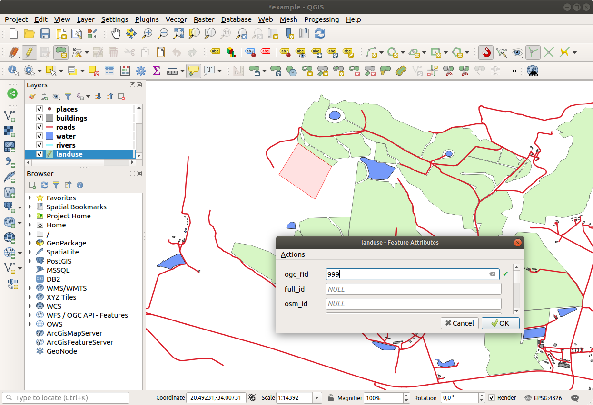
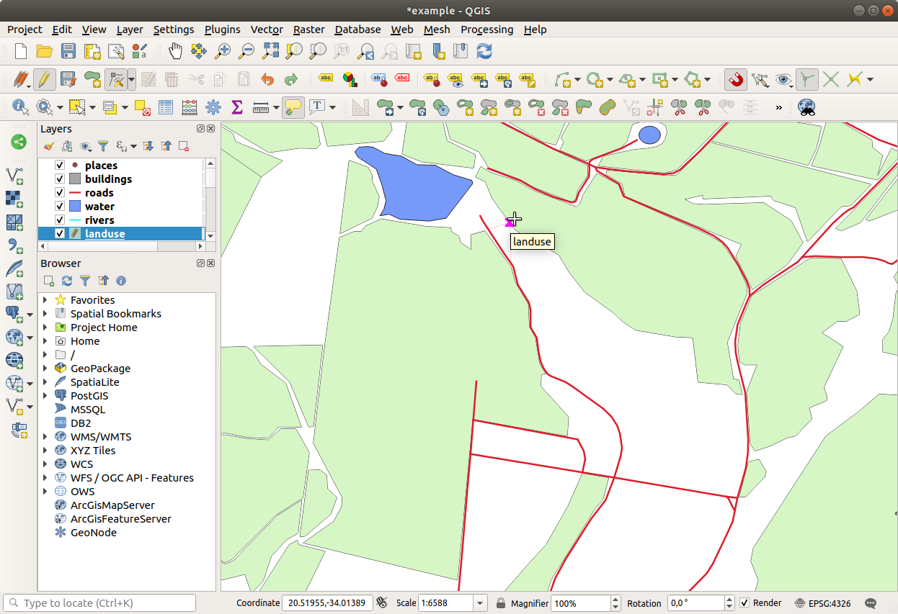

重要
翻訳は あなたが参加できる コミュニティの取り組みです。このページは現在 100.00% 翻訳されています。
5.2. レッスン: 地物のトポロジ
オーバーラップやギャップなどのエラーを最小限に抑えるため、トポロジはベクタデータレイヤの有用な側面です。
たとえば、2つの地物が境界を共有し、トポロジを使用してその境界を編集する場合、はじめの地物を編集し、そしてもう1つの地物を編集して、それらが合うように慎重に境界を描く必要はありません。それらの共有された境界を編集でき、両方の地物は同時に変化します。
このレッスンの目標: 例を用いてトポロジを理解します。
5.2.1. ★★☆ （中級レベル） 理解しよう: スナップする
スナップはトポロジ編集を容易にします。これによりデジタイズ中にマウスカーソルを他のオブジェクトにスナップさせることができます。スナップオプションを設定するには：
メニュー項目 に移動します。
スナップオプション ダイアログを設定して、 データ型 頂点、許容誤差
12ピクセルでlanduseレイヤをアクティブにします:
重なりを避ける 欄のボックスがチェックされていることを確認します。
ダイアログを閉じます。
landuse レイヤを選択して、編集モードにします (
 )
)ツールバーの 高度なデジタイズ が有効になっていることを確認します（ の項を参照）。
このエリアにズームします (必要に応じてレイヤとラベルを有効にします):

この赤で示した新しい（架空の）区域をデジタイズします:
 プロンプトが表示されたら、OGC_FID に 999 を与えます。しかし、他の値は変更しなくても大丈夫です。
注意深くデジタイズしていて、カーソルを隣接する領域の頂点にスナップさせるようにすると、既存の隣接区域との間に隙間ができないことに気がつくはずです。
高度なデジタイズ ツールバーの
 元に戻す と
元に戻す と  やり直す ツールに注目してください。
やり直す ツールに注目してください。
5.2.2. ★★☆ （中級レベル） 理解しよう: トポロジ的地物を修正
トポロジ地物の更新が必要な場合があります。今回の調査区域では、ある区域が森林になったので、 landuse レイヤを更新する必要があります。そこで、この区域の森林地物を拡大し、結合することにします。
森林区域を結合するために新しいポリゴンを作成するのではなく、 頂点ツール を使って既存のポリゴンを編集して結合します。
編集モードに入ります（まだアクティブになっていない場合
 頂点ツール ツールを選択します。
頂点ツール ツールを選択します。森林の区域を選択し、頂点を選択し、隣接する頂点に移動して、2つの森林地物が出会うようにします：
 他の頂点をクリックし、所定の位置にスナップさせます。
トポロジとして正しい境界線はこのようになります:

続けて、頂点ツール を使って、さらにいくつかの区域を結合します。
また、
 ポリゴン地物を追加 ツールを使用して、2つの森林ポリゴンの間のギャップを埋めることができます。 重なりを避ける を有効にすると、頂点を一つ一つ追加する必要はありません。新しいポリゴンが既存のポリゴンに重なる場合、自動的に追加されます。
ポリゴン地物を追加 ツールを使用して、2つの森林ポリゴンの間のギャップを埋めることができます。 重なりを避ける を有効にすると、頂点を一つ一つ追加する必要はありません。新しいポリゴンが既存のポリゴンに重なる場合、自動的に追加されます。例題のデータを使用する場合、次のような森林区域があるはずです:
あなたが結合した森林の区域がより多くても、より少なくても、違う区域であったとしても気にしないで下さい。
5.2.3. ★★☆ （中級レベル） 理解しよう: ツール: 地物の簡素化
同じレイヤで続けて、 地物を簡素化 ツールをテストしてみましょう：
地物を簡素化 ツールをテストしてみましょう：
それをクリックしてアクティブにします。
頂点ツール または 地物を追加 ツールを使って結合した区域の一つをクリックします。このダイアログが表示されます:

許容度 を変えて何が起きるか見てみましょう:

これにより、頂点の数を減らすことができます。
OK をクリックします
このツールの利点は、一般化するためのシンプルで直感的なインターフェイスを提供していることです。しかし、このツールはトポロジを台無しにしていることに注意してください。単純化されたポリゴンは、本来あるべき隣接するポリゴンとの境界を共有しなくなるのです。そのため、このツールは独立した地物に適しています。
次へ進む前に、最後の変更を元に戻すことでポリゴンを元の状態に戻します。
5.2.4. ★★☆ （中級レベル） 自分でやってみよう: ツール: リングの追加
 リングを追加 ツールを使用すると、ポリゴン地物に内部リングを追加（ポリゴンに穴を開ける）することができます。その穴はポリゴン内に完全に含まれている必要がありますが、境界に触れていても問題ありません。例えば、南アフリカの外周をデジタイズし、レソトの穴を追加する必要がある場合、このツールを使用することになります。
リングを追加 ツールを使用すると、ポリゴン地物に内部リングを追加（ポリゴンに穴を開ける）することができます。その穴はポリゴン内に完全に含まれている必要がありますが、境界に触れていても問題ありません。例えば、南アフリカの外周をデジタイズし、レソトの穴を追加する必要がある場合、このツールを使用することになります。
このツールを使って実験してみると、スナップオプションがポリゴン内にリングを作るのを邪魔していることに気づくかもしれません。そのため、穴を開ける前にスナップをオフにすることをお勧めします。
 スナップを有効にする ボタン（またはショートカット s ）を使って
スナップを有効にする ボタン（またはショートカット s ）を使って landuseレイヤのスナップを無効化します。- リングを追加 ツールを使ってポリゴンジオメトリの中央に穴を開けます。
- ポリゴンを追加 ツールを使っているかのように、対象の地物の上にポリゴンを描画します。
右クリックすると穴が見えるようになります。
{kind=link}
答え
正確な形状は重要ではありませんが、このように地物の中央に穴が開いているはずです：

編集を元に戻してから、次のツールの演習を続けてください。
5.2.5. ★★☆ （中級レベル） 自分でやってみよう: ツール: 部分の追加
 部分を追加 ツールを使用すると、主地物に直接接続されていない新しい部分を地物に追加することができます。例えば、南アフリカ共和国本土の境界線をデジタル化したが、プリンスエドワード諸島をまだ追加していない場合、このツールを使用して作成します。
部分を追加 ツールを使用すると、主地物に直接接続されていない新しい部分を地物に追加することができます。例えば、南アフリカ共和国本土の境界線をデジタル化したが、プリンスエドワード諸島をまだ追加していない場合、このツールを使用して作成します。
 地物を選択 ツールを使って、部分を追加したいポリゴンを選択します。
地物を選択 ツールを使って、部分を追加したいポリゴンを選択します。部分を追加 ツールを使って、はみ出した部分を追加します。
 部分の削除 ツールを使って、今作成した部分を削除します。
部分の削除 ツールを使って、今作成した部分を削除します。注釈
部分の内側をクリックして削除します。
答え
まず、Bontebok National Park を選択します:

新しい部分を追加します：

編集を元に戻してから、次のツールの演習を続けてください。
5.2.6. ★★☆ （中級レベル） 理解しよう: ツール: 地物の変形
 地物を変型 ツールは、ポリゴン地物を拡張したり、その一部を（境界線に沿って）切り取るために使用します。
地物を変型 ツールは、ポリゴン地物を拡張したり、その一部を（境界線に沿って）切り取るために使用します。
拡張:
- 地物を選択 ツールを使ってポリゴンを選択します。
ポリゴンの中を左クリックして、描画を開始します。
ポリゴンの外側に図形を描きます。最後の頂点はポリゴンの内側にしてください。
右クリックして形状を完成させます：

これは次のような結果になります:

部分を切り取る：
- 地物を選択 ツールを使ってポリゴンを選択します。
ポリゴンの外側をクリックします。
ポリゴンの内側に図形を描きます。最後の頂点はポリゴンの外に戻っている必要があります。
ポリゴンの外で右クリックします：

以上の結果:

5.2.7. ★★☆ （中級レベル） 自分でやってみよう: ツール: 地物の分割
 地物を分割 ツールは 地物を変型 ツールと似ていますが、2つの部分のどちらかを削除しない点が異なります。そのかわり、その両方を保持します。
地物を分割 ツールは 地物を変型 ツールと似ていますが、2つの部分のどちらかを削除しない点が異なります。そのかわり、その両方を保持します。
このツールを使って、ポリゴンから角を分割してみます。
まず、
landuseレイヤを選択し、スナップを再度有効にします。- 地物を分割 ツールを選択し、頂点をクリックして線を描き始めます。
境界線を引きます。
分割したいポリゴンの「反対側」にある頂点をクリックし、右クリックで線を完成させます：

この時点では、何も起こっていないように見えるかもしれません。しかし、
landuseレイヤは境界線なしでレンダリングされるため、新しい分割線は表示されないことを覚えておいてください。- 地物を選択 ツールを使って、分割した部分を選択すると、新しい地物がハイライトされます:

5.2.8. ★★★ （上級レベル） 自分でやってみよう: ツール: 地物のマージ
ここで、先ほど分割した地物をポリゴンの残りの部分に再度結合します：
 選択した地物を結合 と
選択した地物を結合 と  選択地物の属性結合 ツールを使って実験してみましょう。
選択地物の属性結合 ツールを使って実験してみましょう。相違点に注目してください。
答え
選択地物を結合 ツールを使って、まず結合したいポリゴンを両方とも選択します。
属性のソースとして、 OGC_FID が
1の機能を使用します（ダイアログでそのエントリーをクリックし、 選択した地物から属性を取得する ボタンをクリックします）：
別のデータセットを使用している場合、元のポリゴンの OGC_FID が 1 でない可能性が高くなります。そのような場合には、 OGC_FID が指定されている地物を選択します。

選択地物の属性結合 ツールを使用すると、ジオメトリを区別したまま、同じ属性を与えることができます。
5.2.9. 結論
トポロジ編集はトポロジの観点からの正しさを維持しながら迅速かつ容易にオブジェクトの作成や変更ができる強力なツールです。
5.2.10. 次は?
オブジェクトの形状を簡単にデジタイズする方法はわかりましたが、属性の追加にはまだ頭を悩ませているようですね！ 次は、フォームを使って、属性編集をよりシンプルに、より効果的に行う方法を紹介します。